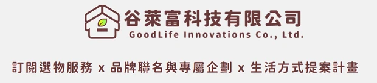

訂閱選物服務
從會反覆用到的家庭補給、清潔與個護用品切入，思考適合的份量與使用週期。讓選購少一點猜測，補給更貼近日常。
不是買更多，而是收到真正需要的。


美好的生活，
不該被瑣事填滿。
從「還有什麼快用完？」到「這個品牌值得信任嗎？」生活裡的小決定，常常比想像中更花時間。
我們以「專業替消費者把關」為核心，從新世代的生活選物平台出發，致力打造放心選購、輕鬆生活的嚴選選物生態系。長期目標，是成為理解家庭需求、值得持續信任的生活夥伴。
訂閱選物服務 × 品牌聯名與專屬企劃 × 生活方式提案計畫

從會反覆用到的家庭補給、清潔與個護用品切入，思考適合的份量與使用週期。讓選購少一點猜測，補給更貼近日常。
不是買更多，而是收到真正需要的。
與理念相近的品牌一起設計商品組合與體驗，讓品質、來源與背後的用心，更容易被理解。
好品牌，值得建立長期關係。
把商品放回真實生活，從一個人的日常，到成家、育兒與陪伴長輩，提出有幫助的生活選擇。
服務跟著生活走，不只是跟著商品走。
以上為品牌發展主軸；商品、方案、價格與服務範圍，依未來正式公告為準。本頁不提供下單或付款。
我們希望需求跟著人走，而不是每到一個人生階段，就重新尋找一套服務。

從日常用品的用量與週期開始，減少反覆搜尋與比較的負擔。
長期規劃家庭需求整合，讓伴侶、孩子與居家補給更容易安排。
未來探索經授權的家屬代管與真人協助，讓跨世代的關心有更便利的方式。
信任，是所有服務的起點
這是我們設計未來服務的原則，也是每一步發展都必須回答的問題。
以供應商審核、商品資訊透明與品質驗證為方向，讓被選進來的商品有值得信任的理由。
規劃暫停、跳過、換品、調整頻率與容易取消的機制。好的訂閱應該配合生活，而不是增加負擔。
把配送說明、售後責任與真人協助納入服務設計，重視每一次承諾能否被妥善完成。
AI 先從提醒與建議開始。未來涉及個人化與代管時，以用途說明、授權、可撤回及人工協助為前提。
2026-2035 發展藍圖
十年後，我們希望谷萊富不只是購物入口，而是能協助家庭安排日常需求的生活管理平台。
2026-2027
從少量、高頻的日常品類開始，驗證選物品質、訂閱節奏與家庭真正感受到的便利。
對你而言：先把每一次需要接住。2028-2030
逐步整合會員、跨品類訂閱、物流與售後，建立可穩定運作的服務方式。
對你而言：少在不同地方重複安排。2031-2033
探索 AI 補貨提醒、需求預測與合作夥伴服務，逐步延伸到居家、學習與旅遊等情境。
對你而言：在需要時，得到合適建議。2034-2035
朝向家庭任務、授權代管與跨服務協作，陪伴不同世代與人生階段。
對你而言：關心家人，多一個可信任的幫手。這是一份發展方向，不是已上線功能清單或保證推出時程。我們會依需求驗證、服務品質與實際條件，調整每一步的進度。
給品牌、小農與研發者
品牌合作頁整理了合作方式、訂閱制觀念、三支 1 分鐘影片，以及 6 題商品訂閱適性測驗。
本網站用來介紹谷萊富的品牌方向、服務理念與十年願景，目前提供回饋表單，以及給品牌的訂閱適性測驗，不提供購物、會員註冊或付款。商品與服務開放資訊將以正式公告為準。
就是為了讓日常順利運作而付出的時間與注意力，例如搜尋、比較、記住補貨、安排配送與處理售後。谷萊富希望減少這些重複負擔，把時間還給自己與家人。
還不能透過本頁使用。AI 提醒、家庭帳戶、授權代管與跨服務協作屬於未來規劃，會依需求驗證與實際條件逐步評估，不代表目前已提供或保證推出。
我們重視品質驗證、產品透明與來源可信，並把可調整、容易取消與售後責任納入未來服務的設計原則。訂閱應持續帶來價值，而不是只靠綁約維持關係。
生活上的需求或服務建議，請使用下方回饋表單。品牌、小農或研發者想討論合作，請到品牌合作頁留言，我們會依商品與營運條件一起評估。
有哪一件生活小事，你希望變得更輕鬆？也歡迎留下服務建議。想談品牌合作，請到品牌合作頁。
留下你的想法、需求或建議。送出後，資料只會寫入谷萊富的回饋資料庫，不會在前台公開。
請勿填寫密碼、身分證字號、付款或健康等敏感資料。這不是訂購或付款表單。